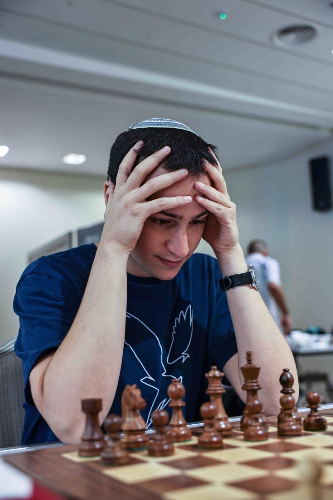
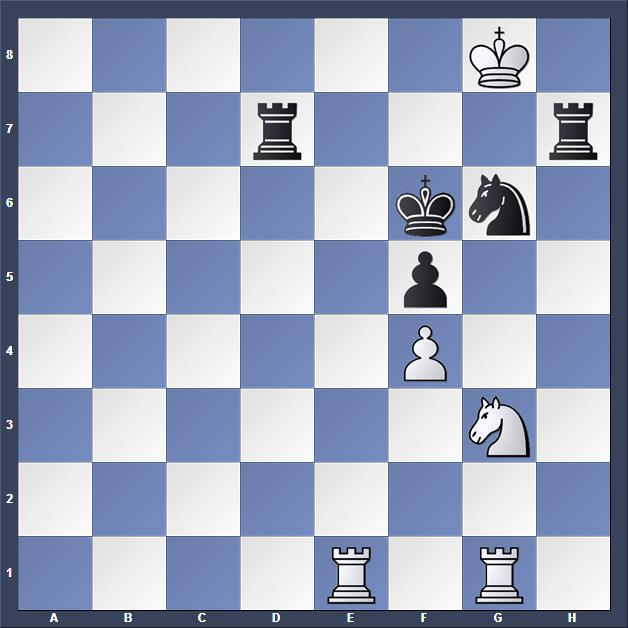
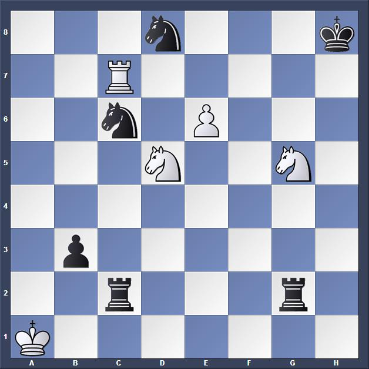
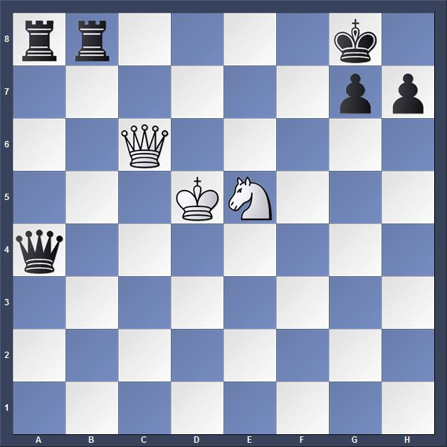

Linkedin |
Gmail |
Lichess
Welcom to my first site!

About Me
My name is Jonathan Fadida. I was born and raised in Rishon Lezion, and I now live in Jerusalem. I’m a professional social worker, leading rehabilitation
processes and facilitating group sessions. Currently, I work at a hostel for homeless people, helping individuals find their path to recovery.
In addition to my work, I practice meditation, which helps me find inner peace and strengthen my concentration. I also enjoy solving challenging problems, especially in chess games.
I'm passionate about chess, plants, swimming, and photography. Through these hobbies, I develop strategic thinking, patience, and creativity.
On this site, I will present my favorite chess problems, the theoretical openings I like, and the players who have influenced me and my chess strategy.
My favorite Chess Opening:
- King's Indian defence
- Sicilian defence, Dragon Variation
- King's Gambit
- French Defence
- Caro-Kann Defence
- Trompovsky Attack
The Grandmasters who inspire me:
- Mikhail Tal
- Garry Kasparov
- Bobby Fischer
- Magnus Carlsen
- Hikaru Nakamura
- Wesley So
My favorite Chess Combinations:



White to move and win the game.
Think you've found the solution to all combinations?
Click here
for the solutions!